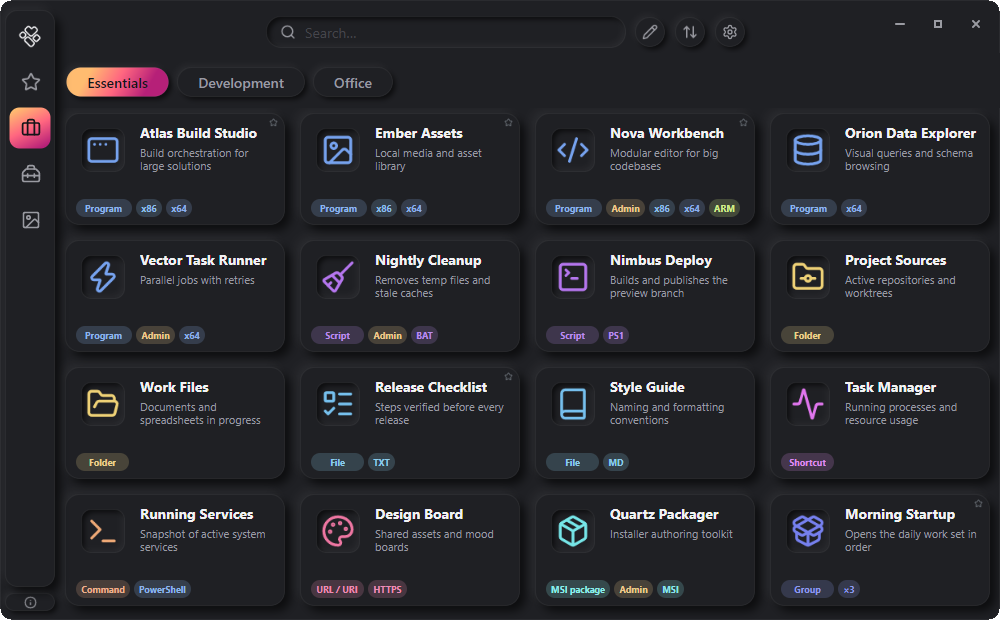
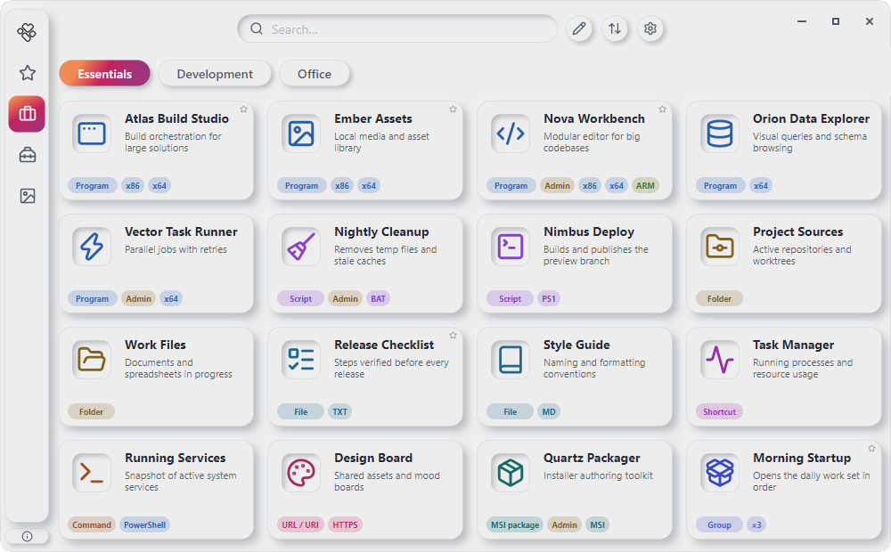

Errant Launcher
Everything you need. In one place.
Apps, files, scripts, commands, and links — organized into quick-launch cards. Arrange everything your way and keep the tools you need close at hand.


About the app
Errant Launcher is for those who want to organize their own digital workspace. Instead of scattered shortcuts and files you open by hand every time, it offers a single interface where you decide how your workspace is arranged and which tools stay within reach.
What makes it different
Truly portable
Writes only to its own ErrantLauncher folder. No registry, no profile, no temp files. Copy it to a flash drive and go.
Zero telemetry
No analytics, no update checks: the app never connects to the internet on its own.
Open data
The whole configuration lives in readable JSON files — inspect, hand-edit, or back up with git. No vendor lock-in.
More than shortcuts
A card grid, not a pile of desktop shortcuts: commands, scripts, and grouped tasks in one interface.
Errant Launcher features
Cards and launching
9 card types
Applications, scripts, folders, files, shortcuts, commands, URLs / URIs, MSI packages, and groups.
Availability status
See when a file is missing, a drive is unavailable, or a source cannot be accessed.
Sequential group launch
Combine cards into groups, set launch order and delays, run the sequence with one click.
Run as administrator
Individual cards or the whole launcher — with elevated privileges.
System tray
Minimize the app to the notification area — Open / Exit menu.
Organization and personalization
Organization
Sections and categories, favorites, search across the collection, and card sorting.
Duplicate and hide
Duplicate cards and hide sections or categories without deleting them.
Custom icons
Built-in collection, your own images, or icons extracted from EXE files and shortcuts.
Customize the look
15 themes, a separate accent color, and color styles for card icons and badges.
6 interface languages
Russian, English, Ukrainian, Azerbaijani, Spanish, and Brazilian Portuguese.
Adding cards
Editor
Create cards manually — from an app to a command or a group.
Bulk import
Scan folders — found programs, files, scripts, and shortcuts become cards.
Drag & drop
Drag files, shortcuts, and links into the window to create cards instantly.
Portability and data
Portability
Paths inside the data folder stay relative — move it to a USB drive or another folder.
Backup and sharing
Full app backup or share your card collection with other users.
Read-only mode
Works from protected folders without write permissions.
Ready to tidy up?
Gather your programs, files and tools in one convenient place.
Download Errant Launcher